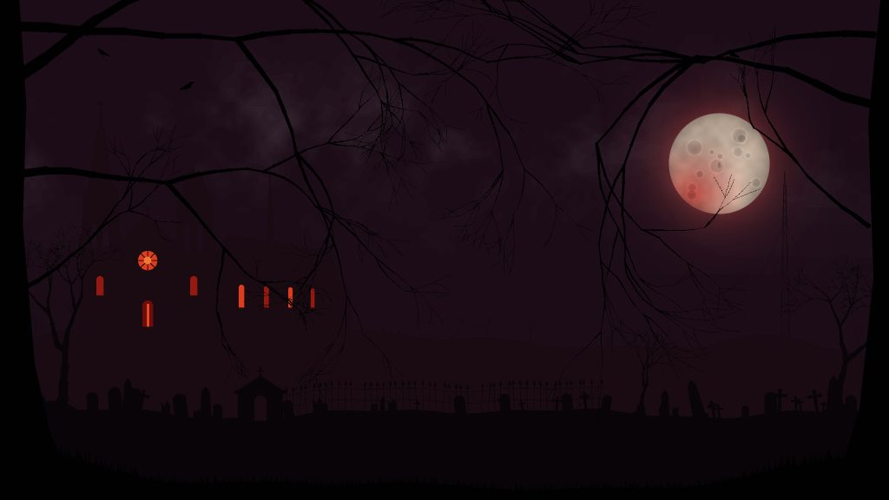

- Where
- 500 to 1000 blocks from spawn, roughly the opposite way from the Forsaken Altar
- Appears
- It rises once you come within about 90 blocks
- Ground
- Open, flat ground above the sea; never in a cave, on a mountainside, under a cliff or in water
- Find it with cheats
/locate structure statichollow:cathedral- Why "not on any map"
- It isn't there until you come close. The Watcher, after your ninth kill: "there is a church that isn't on any map. find it. i'll be on the ceiling."
The graveyard
The cathedral stands inside a great walled graveyard with a gate: gravestones and crosses, crypts, dead trees, bones, cobwebs and blood splashed everywhere. When it rises it clears every tree, leaf, bush and hump of ground in its way, and cuts the ground round it back in steps so it never sits in a pit. Since 1.40 there's a vault under each crypt; since 1.62.0 grave candles and hanging chains are down there with the tombs.
The nave
A long nave of hollow stone with buttresses, a pitched roof, a rose window, and twin towers with spires. Inside: columns and arches, rotten pews, a torn red carpet with a trail of blood up the aisle, chandeliers, and see-through ruby stained glass. Light pours in through every window in red shafts, following the sun across the sky, with dust drifting and glinting in them.
The Watcher hangs from the ceiling.
The Congregation: since 1.40, Mourners sit in the pews praying, their heads turning after you. Hurt one, or play the organ, and they all stand up. At nightfall the dead are back in their pews.
The sanctuary
In the sanctuary is the Hollow Reliquary with nine head pedestals around it. Put one head from each of the nine creepypastas on the pedestals and right-click the reliquary with an empty hand to summon the Hollow Saint.
The undercroft
Since 1.40, two stairs go down either side of the sanctuary into an undercroft under the whole nave:
- A vaulted aisle hung with soul lanterns, with bone piles on its floor and chains hanging from its vault (since 1.62.0).
- Tombs. Open a sarcophagus and what was buried in it is in it: grave goods, or the Interred, who sits up and climbs out. The sealed ones open by themselves when you come close.
- Two ossuaries.
- The priest's study, with Fr. A. Penn's journal.
- The treasury, behind its bars.
- A flooded charnel pit.
- At its end, behind a gate forced from the inside, the Saint's tomb: empty, its chains broken.
Journal
Fr. A. Penn
Found: the priest's studyI went down this morning. The gate is bent outward. The tomb is open and empty and its chains are broken, and the congregation was smiling when I came back up.
God keep whoever reads this. Do not open the tombs.
Last page. Read the whole journal.
The organ loft
Over the doors. You can play the organ (it wakes the Mourners). At night it plays itself, and the candles go out one by one from the doors to the altar.
The belfry
At midnight the bell tolls thirteen ("The bell tolls thirteen."), and on the thirteenth the Watcher is standing in the doorway. The bell-ringer S. Marsh kept a tally of it.
The confessionals
Two of them. Kneel at the screen and something on the other side answers. What it might say:
Through the screen, a breath. Then: "How long since your last confession?"
"Say it. We all said it."
Someone on the other side is crying without making a sound.
"The Saint heard everything. Then it got up."
"Nine. Say nine names."
A whisper says your name, and then something you did.
"Father isn't here. Father's downstairs."
"You are forgiven. You are forgiven. You are forgiven."
"The bell rings thirteen. Don't be here for the thirteenth."
Fingernails, very slowly, down the other side of the screen.
Later
The cathedral comes back in the story's last chapters. Its picture is one of the frames of the story so far on the Great Screen in the Stalls, and one of the painted flats on the Other Side. The Hub's first portal, The Hollow, brings you back here to fight the Hollow Saint again: it rises out of the floor as a replay (see the Hub).
On the main menu
The mod's main menu is a dead night over this cathedral: a red moon behind drifting cloud, the cathedral on its hill with candle-lit windows that flicker and sometimes gutter out, a graveyard, dead trees with crows. Lightning strikes every so often and each time the Watcher is somewhere else. Every third flash shows something huge standing behind the cathedral. The home page is built from the same layers.
